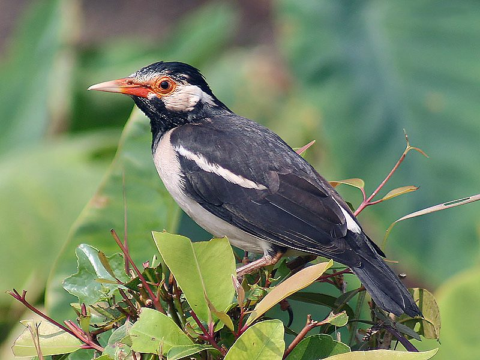

गुलाम मैनाAsian Pied Starling
Gracupica contra · Sturnidae · BRD-0012

- Scientific name
- Gracupica contra (Linnaeus, 1758)
- Family
- Sturnidae
- Hindi
- गुलाम मैना / नागपंछी / पैड मैना
- Status here
- native
- IUCN
- LC
When to look कब देखें
Present all year.
गुलाम मैना / Asian Pied Starling
Gracupica contra (Linnaeus, 1758) — Sturnidae
गुलाम मैना — खेतों और गाँवों का परिचित पक्षी है — काली-सफेद, नारंगी-लाल आँखों के इर्द-गिर्द चमड़ा, और मैना परिवार का खाँटी शोरगुल। यह मैना का करीबी रिश्तेदार है पर अलग — पैंट पहने जैसी सफेद-काली धारियाँ। दोनों अक्सर एक ही खेत में चरते मिलते हैं। यह गाँव के आसपास की खेती और जैव-विविधता को जोड़ने वाला पक्षी है।
हिंदी परिचय Hindi Overview
गुलाम मैना (Gracupica contra) खेतों और गाँवों का परिचित पक्षी है — काली-सफेद, नारंगी-लाल आँखों के इर्द-गिर्द चमड़ा, और मैना परिवार का खाँटी शोरगुल। यह मैना (Acridotheres tristis) का करीबी रिश्तेदार है पर अलग — पैंट पहने जैसी सफेद-काली धारियाँ। दोनों अक्सर एक ही खेत में चरते मिलते हैं। यह गाँव के आसपास की खेती और जैव-विविधता को जोड़ने वाला पक्षी है।
Quick Identification त्वरित पहचान
| Feature | Description |
|---|---|
| Size | 23–25 cm total length; stocky Passerine build |
| Plumage | Striking black and white; black head, back, and upper breast; white cheek, rump, wing patch, and belly |
| Face | Bare orange-red skin patch around the eye (orbital ring) |
| Bill | Sturdy, orange-yellow with a pale tip |
| Flight | Direct and fast, showing a prominent white wing patch and rump flash |
| Voice | Loud, varied, musical whistles, chattering, and minor mimicry |
Field tip: Unmistakable black-and-white starling with a bright orange-red patch of bare skin around the eye. It is usually seen foraging in pairs or small noisy flocks in crop fields, often walking alongside Common Mynas.
Morphology आकारिकी
Biometrics (subspecies contra, northern India — the form in eastern UP):
| Measurement | Range |
|---|---|
| Total length | 220–250 mm |
| Wing (flattened chord) | 114–128 mm |
| Tail | 65–75 mm |
| Tarsus | 31–36 mm |
| Bill (culmen from base) | 26–31 mm |
| Weight | 70–85 g |
Plumage: Black and white pattern — head, upper breast, back, and wing coverts black; lower underparts, wing patch (visible in flight as bold white flash), rump, and tail tip white. The contrast is clean and diagnostic.
Face: Orange-yellow or red-orange bare skin around the eye (orbital ring) — broader than the yellow in Common Myna and more intensely coloured. Bill orange-yellow, pointed.
Eyes: Brown iris. Legs and feet yellowish-brown.
In flight: Bold white wing patch and white rump flash — makes the bird easy to identify even at distance as it flies across fields.
Vocalisations
The Asian Pied Starling is a noisy bird with a wide variety of sounds.
- Contact call: A sweet, liquid, rising chweeo or pi-lo whistle exchanged between pair members.
- Song: A mixture of liquid whistles, chirps, and mimicry of other birds, often given by males from an exposed branch.
- Alarm chatter: A harsh, grating churr-churr given when disturbed or when predators are nearby.
Ecological Role पारिस्थितिक भूमिका
Agricultural fields: Pied Starlings are insectivorous foragers that walk methodically through agricultural fields, plucking insects, earthworms, grasshoppers, beetles, and soil invertebrates. They follow ploughing tractors and buffalo-plough teams, catching disturbed invertebrates — a classic commensal relationship with farming.
Grain feeding: Also feeds on seeds and grain — ripe paddy, sorghum, millet. This creates a mixed relationship with farmers: beneficial as insect pest controller, potentially damaging as grain consumer.
Social foraging: Forages in pairs (when breeding) or small flocks of 10–20 outside breeding season. Often mixes with Common Myna flocks and cattle egrets at feeding sites.
Cattle commensalism: Like Common Myna, follows cattle in open fields — catching insects disturbed by their hooves. Also seen around cattle dung, probing for dung beetles and larvae.
Life Cycle / Phenology जीवन चक्र
- April–June: Territory and pair bonding; nest building begins.
- May–August: Nesting in thorny trees (Acacia, babool); 4–6 pale blue-green eggs.
- June–August: Incubation and chick rearing; colonial nesters — several pairs in same tree.
- September–October: Post-breeding flocks form; juveniles join adult flocks.
- November–March: Non-breeding flocks; communal roosts at night.
Colonial nesting: Pied Starlings often nest colonially — 5–20 pairs in the same large thorny tree (acacia, babool). The colony provides collective vigilance against predators. Nest: bulky, domed, made of grass and leaves; placed in tree fork.
Moult: Adults moult fresh plumage after breeding — the black plumage becomes particularly glossy and black in fresh-plumaged birds (post-August).
Host Plants or Prey आहार
Primary food and prey:
- Invertebrates: grasshoppers (Oxya spp.), crickets, beetles, and caterpillars
- Earthworms (Metaphire posthuma) exposed in ploughed fields
- Seeds and ripening grains of paddy (Oryza sativa), sorghum, and millet
- Wild figs of Peepal and Banyan
Predators / Natural Enemies शत्रु
- Shikra (Accipiter badius) — key aerial predator of adult starlings
- Indian Rat Snake (Ptyas mucosa) — raids nests in thorny tree forks for eggs/chicks
- House Crow (Corvus splendens) — steals eggs from nesting colonies
Agricultural / Human Relevance कृषि एवं मानव उपयोग
Net agricultural benefit: Overall, Pied Starlings are considered beneficial by agricultural entomologists — the volume of pest insects consumed (grasshoppers, caterpillars, beetles, borers) outweighs grain losses in most cropping systems. Paddy crop grain losses are localised and seasonal.
Early pest warning: A sudden gathering of pied starlings in a field often indicates an insect outbreak (grasshoppers, armyworms) — farmers who observe this can act quickly on pest management.
Cage bird history: Formerly kept as cage birds in eastern India and Southeast Asia for their mimicry and song — now protected under Indian law. Wild populations should not be captured.
Cultural familiarity: The "ablak maina" (piebald myna) is mentioned in Bhojpuri folk songs and is a familiar presence in every village — part of the agricultural soundscape.
Expected Locally स्थानीय रूप से अपेक्षित
Not a field record. Written from published accounts for eastern Uttar Pradesh. No confirmed local sighting yet — if you have seen it, that is what the atlas needs.
अभी तक स्थानीय पुष्टि नहीं। यह विवरण प्रकाशित स्रोतों से है, किसी अवलोकन से नहीं।
Very common across agricultural plains of Basti district, regularly foraging on freshly tilled soil or paddy stubble. Thorny Babool trees along canal banks often host nesting colonies during monsoon months. Birds are highly active and vocal around dawn.
Distribution वितरण
Global range: Widespread across South and Southeast Asia, from Pakistan and India through Nepal and Bangladesh to Myanmar, Thailand, Cambodia, and Java; introduced populations exist in western India and parts of the Middle East.
In India: Common across the Gangetic plains, central India, and northeast India; absent in high mountains, arid desert regions, and the southern peninsula.
In Uttar Pradesh: Abundant year-round resident across the entire state.
In Basti district / eastern UP: Highly common resident; found in agricultural fields, village common lands, roadsides, and seasonal wetlands.
Range notes: No significant range changes documented.
Research Questions शोध प्रश्न
- What is the ratio of insects to grain in the diet of Pied Starlings during paddy ripening in eastern UP — net beneficial or damaging?
- Do Pied Starling colonies at nesting sites return to the same trees in successive years — and if so, are those trees identifiable across the Basti landscape?
- How do mixed-species foraging flocks (Pied Starling + Common Myna + Cattle Egret) partition resources in ploughed fields?
- Is there measurable mimicry in the Pied Starling's song repertoire in eastern UP populations — which species are mimicked?
- Has the urban expansion of Basti and Ayodhya towns reduced Pied Starling habitat at the agricultural fringe — and is there a detectable population trend?
Similar Species मिलती-जुलती प्रजातियाँ
| Species | How to distinguish |
|---|---|
| Acridotheres tristis (Common Myna, BRD-0006) | Brown, not black; yellow facial patch, not orange orbital ring; white wing patch only in flight |
| Acridotheres fuscus (Jungle Myna) | Grey-brown; tuft at bill base; yellow orbital patch; no white underparts |
Taxonomy & Classification वर्गीकरण
Original description. Gracupica contra was described by Carl Linnaeus in 1758 as Sturnus contra in Systema Naturae, 10th Edition, page 167. Type locality: India. It was subsequently transferred to the genus Gracupica Lesson, 1831.
Subspecies. Three subspecies are currently recognised:
| Subspecies | Authority | Range | Notes |
|---|---|---|---|
| G. c. contra | (Linnaeus, 1758) | East Pakistan, northern and eastern India, Nepal | Nominate form occurring in Uttar Pradesh |
| G. c. superciliaris | (Hume, 1873) | Northeast India, Myanmar | Broader white supercilium |
| G. c. floweri | (Sharpe, 1897) | Thailand, Laos | Face patch whiter |
Family and order placement. Belongs to the order Passeriformes, family Sturnidae (starlings and mynas). The family Sturnidae contains approximately 120 species of highly social, vocal birds.
Phylogenetic notes. Molecular studies (e.g., Zuccon et al., 2008) resurrected the genus Gracupica for this species and Gracupica floweri (which is now often split as a separate species, the Javan Pied Starling Gracupica jalla), separating them from Sturnus and Acridotheres.
IUCN status rationale. Assessed as Least Concern (LC) by the IUCN Red List. It is extremely common, adaptable to agricultural and urban environments, and its global population is stable.
Photo Gallery फ़ोटो गैलरी
Note: Add field photos tomedia/species/asian_pied_starling/
फोटो निर्देश: आँख के चारों ओर का नारंगी रंग दिखाते हुए क्लोज़-अप, हल के पीछे खेतों में चरते हुए, और बाबुल के पेड़ पर घोंसले।
Photos needed आवश्यक फोटो
- [ ] Perched showing orange orbital skin (चेहरे की नारंगी त्वचा)
- [ ] Foraging in freshly ploughed field (जुते हुए खेत में चरते)
- [ ] In flight showing white wing flash and rump (उड़ान में सफेद पट्टी)
- [ ] Domed nests in thorny babool branches (काँटों में घोंसले)
Atlas Connections संबंधित प्रजातियाँ
- Common Myna — common foraging associate; shares agricultural habitat (BRD-0006)
- Paddy Grasshopper — primary prey in paddy fields (INS-0005)
- Indian Common Earthworm — earthworms taken from freshly ploughed soil (SFL-0002)
- Paddy — key agricultural habitat; grain consumer and insect pest predator (FLR-0014)
References सन्दर्भ
- Linnaeus, C. (1758). Systema Naturae per regna tria naturae. Editio Decima, Reformata. Laurentii Salvii, Holmiae, p. 167. [original description]
- Ali, S. & Ripley, S.D. (1986). Handbook of the Birds of India and Pakistan. Vol. 5. Oxford University Press, New Delhi.
- Grimmett, R., Inskipp, C. & Inskipp, T. (2011). Birds of the Indian Subcontinent. 2nd ed. Christopher Helm, London.
- Rasmussen, P.C. & Anderton, J.C. (2005). Birds of South Asia: The Ripley Guide. Smithsonian Institution, Washington.
- Zuccon, D. et al. (2008). Phylogenetic relationships among Palearctic-Oriental starlings (Aves: Sturnidae). Zoologica Scripta, 37(5), 469–481.
- BirdLife International (2024). Gracupica contra. IUCN Red List of Threatened Species. Ver. 2024.
- GBIF Occurrence Data — Gracupica contra, Uttar Pradesh (2010–2025).
Source file: species/fauna/birds/asian_pied_starling.md